Path-traced in Blender Cycles from the same centimetre model as the plan and the 3D walkthrough. The light is physically simulated: Cairo sun and sky, reflections on the polished porcelain, and warm LED coves. Walls, openings and furniture are all at their true sizes. Click any image to see it full screen.
Proposal 1 · the kitchen
Andrew's Proposal 1 with the kitchen from your reference and your friends' photos: the oak wall with the hidden utility door, the white run under the window, the grey stone island with the solid-oak L bar, and black cylinder lights. The living room and reception aren't furnished in Proposal 1 yet, so they stay empty here.
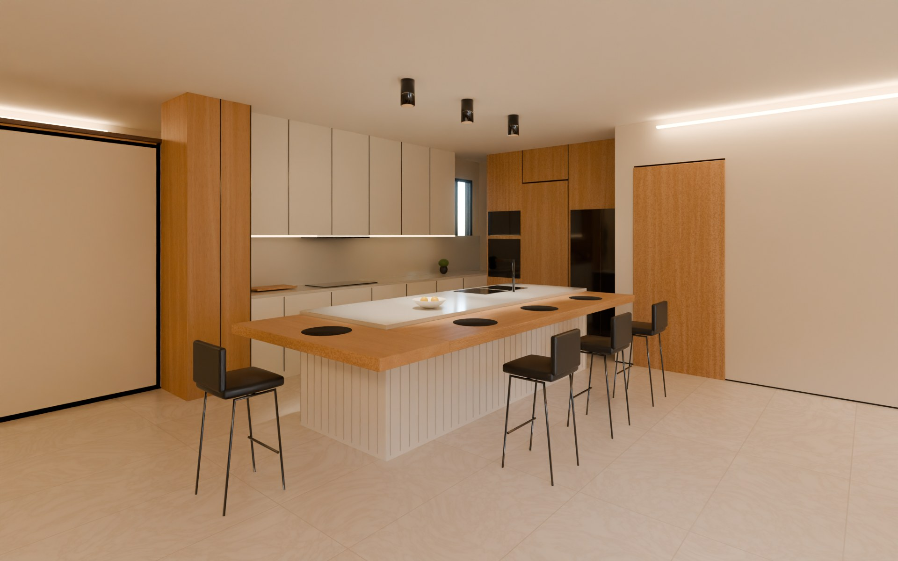
From the living roomThe solid-oak bar wraps the island in an L, tucked under the grey stone. The white run on the window wall has the hob, and the tall oak wall holds the black fridge, the hidden utility door and the ovens.Afternoon · 20 mm · eye height 1.50 m
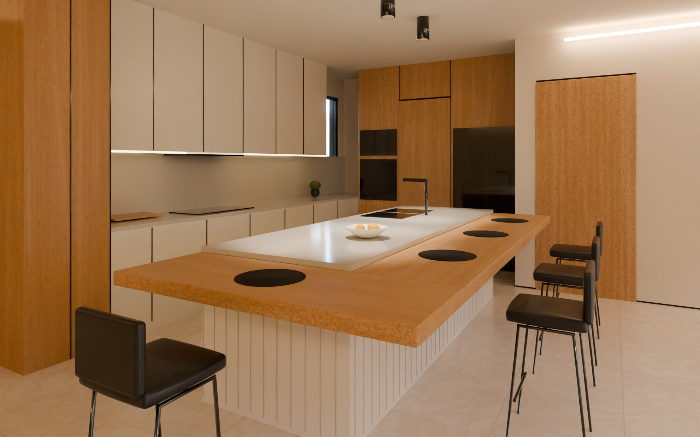
The bar cornerThe mitred corner of the 7 cm oak slab, the white V-groove panelling under it, and the black leather counter stools.Afternoon · 24 mm
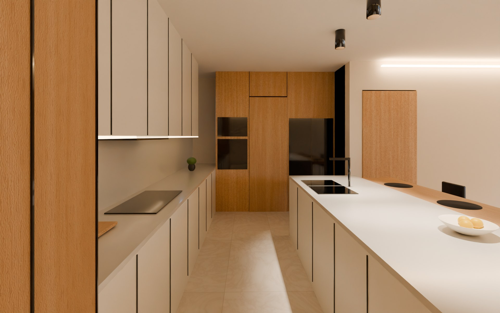
Down the aisle1.25 m between the run and the island. Ahead, the oak wall: the fridge, the flush door to the utility, and the oven with the microwave above.Afternoon · 18 mm
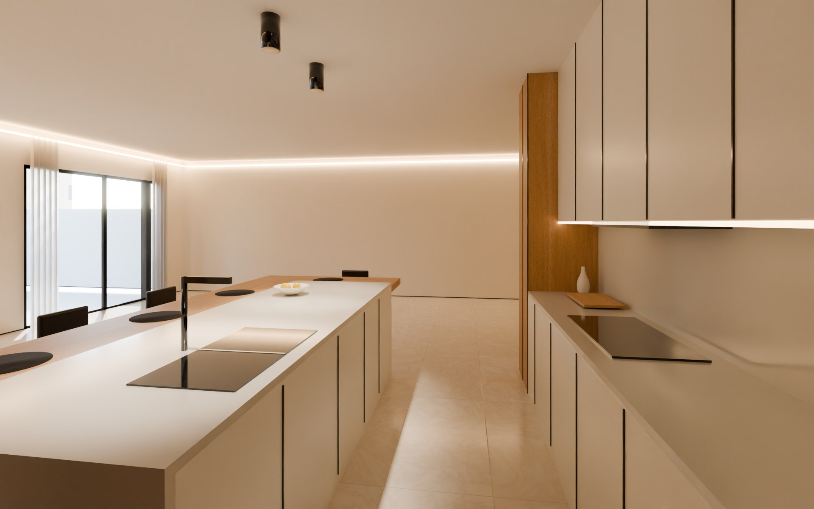
From the utility endStanding by the oak wall, looking toward the foyer: the black double sink in the island, the hob under the wall cupboards and their LED strip, and the tall oak larder against the foyer screen.Afternoon · 18 mm
Rev 3.1 · the whole apartment
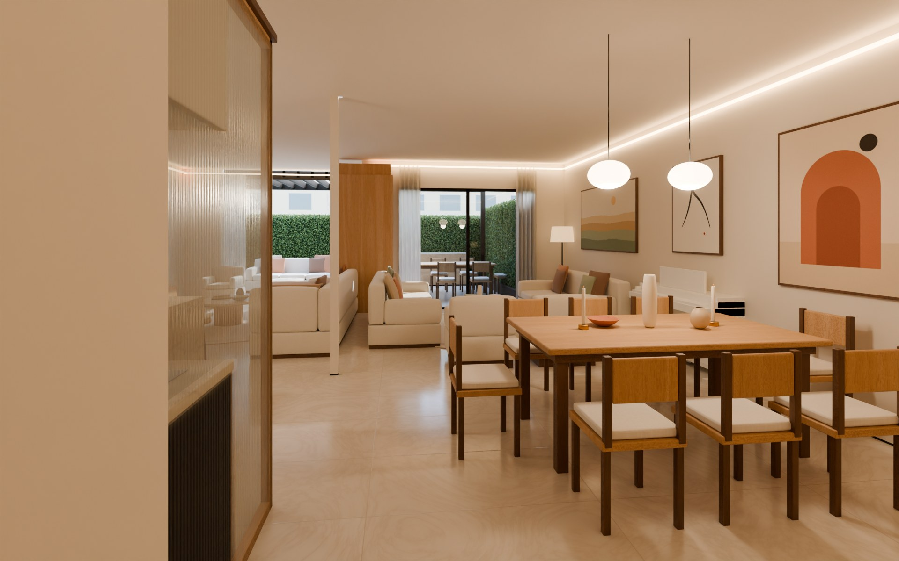
Walking inJust inside the main door. The fluted-glass kitchen screen is on the left, the dining table under its two pendants on the right, and the reception and garden ahead.Afternoon · 18 mm · eye height 1.40 m
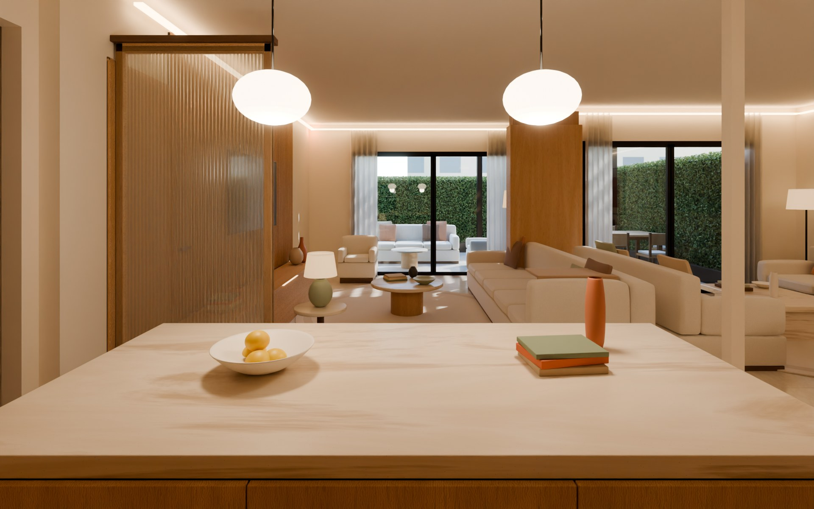
At the islandThe view you asked for: from the island across the family room to the garden.Noon · 18 mm · earlier pass
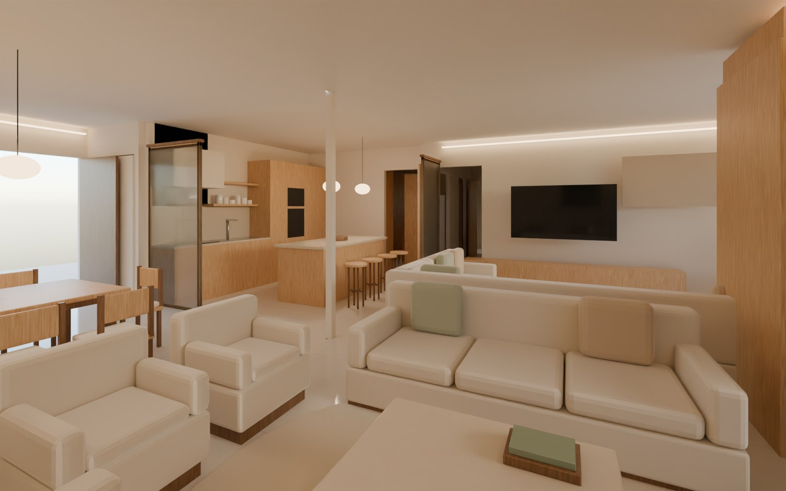
Reception to family livingWith the oak panel wall open, the reception, the family room and the kitchen read as one space.Morning sun from the east · 17 mm · earlier pass
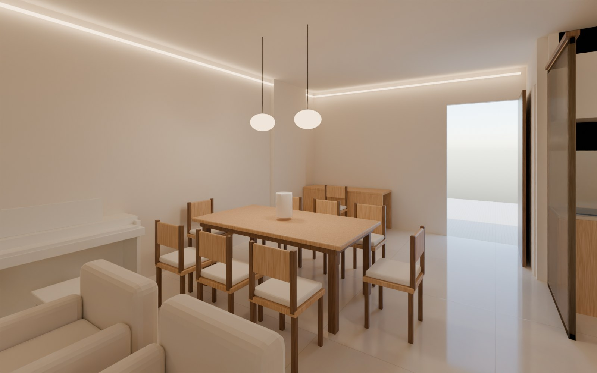
Dining, desk, pianoThe table runs across the room, your desk is in the corner, and the Yamaha stands against the west wall.Noon · 18 mm · earlier pass
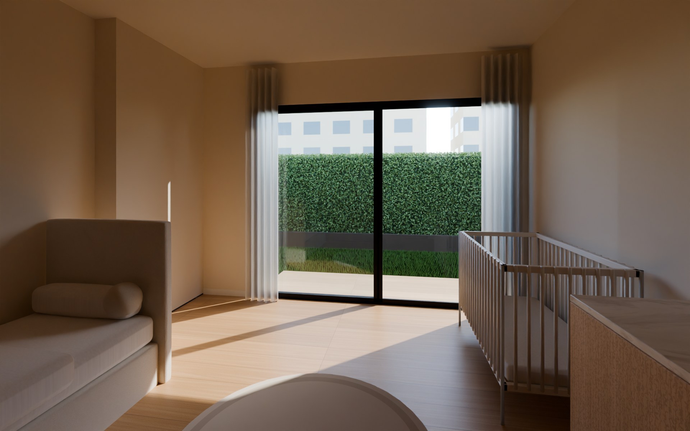
The kids' roomToddler bed, cot and changing unit, with the deck outside the sliding door.Noon · 17 mm · earlier pass
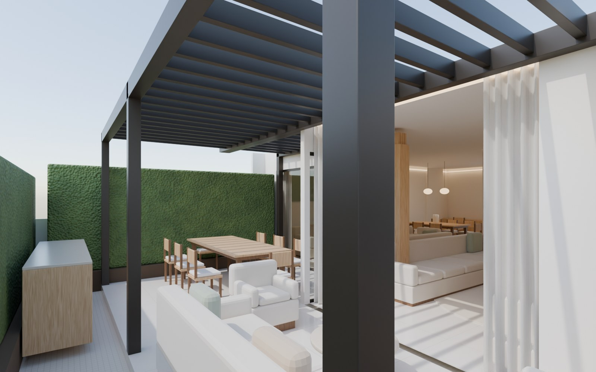
The gardenFrom the lawn toward the pergola terrace: the outdoor kitchen, the lounge and the dining table for 10.Noon · 20 mm · earlier pass
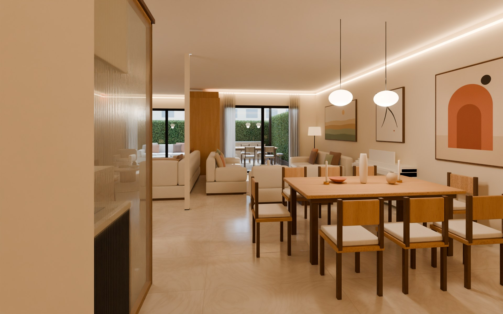
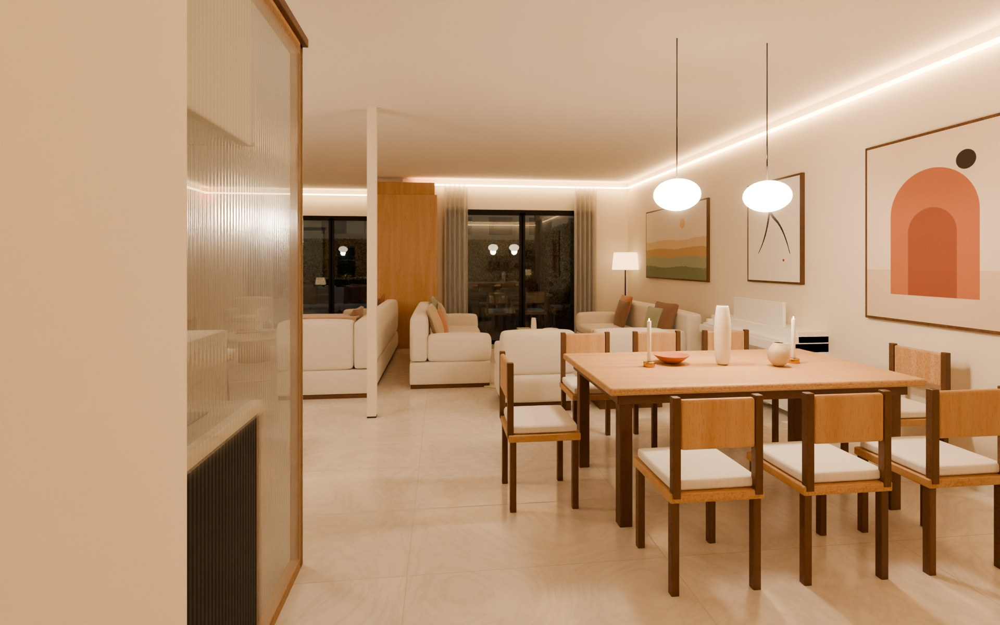
NoonEvening
Noon to eveningDrag across the image to compare the same arrival view at noon and after sunset. In the evening, warm LED coves light the ceiling edges and the pendants light the dining table.Dusk · coves and pendants on · earlier pass
What's real in these renders
Two passes:Walking in is the latest pass, with the full materials and styling. The views marked "earlier pass" come from the first round.
Real: the architecture and every dimension, Cairo's sun and sky, and the light bouncing between the surfaces. These passes assumed the garden faces due south; the next round uses the measured 155° (south-south-east).
Placeholders: the furniture, art and décor. When the layout is final and you send your real furniture, I'll re-render every view with it, and add the 360° tour.
Left out on purpose: trees and plants, until we design the planting together.